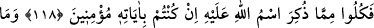
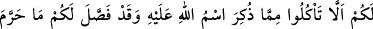
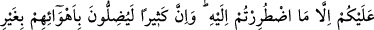
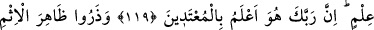
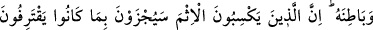
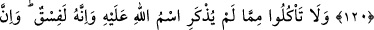
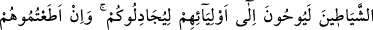
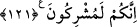

HAYVAN KESİLİRKEN
ALLAH’IN ADINI ANMAK
118. Allah’ın âyetlerine inanıyorsanız, üzerine O’nun adı anılarak kesilenlerden
yeyin.
119. Üzerine Allah’ın adı anılıp kesilenden yememenize sebep ne? Oysa Allah,
çaresiz yemek zorunda kaldığınız dışında, haram kıldığı şeyleri size açıklamıştır.
Doğrusu bir çokları bilgisizce kendi kötü arzularına uyarak saptırıyorlar.
Muhakkak ki Rabbin haddi aşanları çok iyi bilir.
120. Günahın açığını da gizlisini de bırakın! Çünkü günah işleyenler, yaptıklarının
cezasını mutlaka çekeceklerdir.
121. Üzerine Allah’ın adı anılmadan kesilen hayvanlardan yemeyin. Kuşkusuz bu
büyük günahtır. Gerçekten şeytanlar dostlarına, sizinle mücadele etmeleri için
telkinde bulunurlar. Eğer onlara uyarsanız şüphesiz siz de Allah’a ortak koşanlar
olursunuz.
“Allah’ın ayetlerine inanıyorsanız, üzerine O’nun adı anılan (hayvan)lardan
yeyin.” Bu ayet, Allah’ın haram kıldıklarını helâl, helâl kıldıklarını da haram sayan
sapıklara uymayı, inkârın netîcesini bildirmektedir.
Ey mü’minler, sadece boğazlanırken üzerine Allah’ın adı anılan hayvanlardan yeyiniz.
Sadece Allah’dan başkasının adı anılan, Allah ile beraber başkasının adı da anılan, ya
da boğazlanmadan kendiliğinden ölen hayvanların etini yemeyiniz. Çünkü Kur’an
ayetlerine inanmak, Allah’ın helâl kıldığını helal kabul etmekle ve haram kıldığından
uzak durmakla olur.